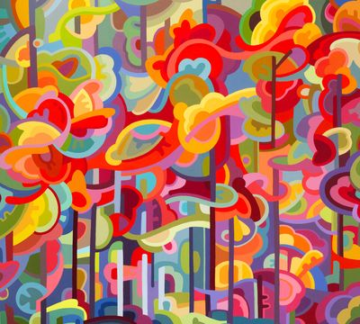

Abstract Landscapes
Original paintings capturing the feeling of Canadian scenery - the light, the color, the quiet moments that stay with you.
Welcome to my studio
Every painting starts with a feeling — a memory of a place, a moment in nature, the way light hits the water on a quiet morning. My work explores the intersection of memory, emotion, and the natural world.
I work primarily in acrylic on wood, building up layers of color and texture to create pieces that are both energetic and meditative. I hope my art brings a sense of calm and joy to your space.